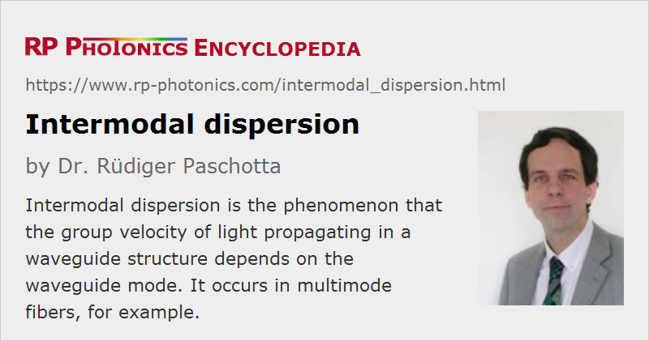

Intermodal Dispersion
Definition: the phenomenon that the group velocity of light propagating in a waveguide structure depends on the waveguide mode
Alternative term: modal dispersion
More general term: dispersion
German: intermodale Dispersion
Category: fiber optics and waveguides
How to cite the article; suggest additional literature
Author: Dr. Rüdiger Paschotta
Intermodal dispersion (also called modal dispersion) is the phenomenon that the group velocity of light propagating in a multimode fiber (or other waveguide) depends not only on the optical frequency (→ chromatic dispersion) but also on the propagation mode involved.
Figure 1 shows a numerical simulation, where a 200-fs ultrashort pulse is launched into a 50 cm long multimode fiber such that multiple modes are excited. After the fiber, the corresponding contributions appear at different times due to different group velocities of the modes. The fundamental mode comes first, as it is the fastest.
The strength of intermodal dispersion can be quantified as the differential mode delay (DMD). It depends strongly on the refractive index profile of the fiber in and around the fiber core. For example, for a step-index profile the higher-order modes have lower group velocities, and this can lead to differential group delays of the order of 10 ps/m = 10 ns/km. It is then hardly possible to realize data rates of multiple Gbit/s in an fiber-optic link with a kilometer length.
In systems for optical fiber communications based on multimode fibers, intermodal dispersion can severely limit the achievable data transmission rate (bit rate). In order to avoid strong signal distortion, it is usually necessary to keep the pulses long enough to maintain a reasonable temporal overlap of components from different modes, and this unavoidably sets a limit on the data rate.
The natural way of eliminating intermodal dispersion is to use fiber links based on single-mode fibers: if there is only one propagation mode available (disregarding possible polarization mode dispersion and cladding modes), there cannot be difference between propagation times. However, intermodal dispersion can also be minimized by using multimode fibers with a parabolic refractive index profile, where intermodal dispersion is minimized.
Questions and Comments from Users
Here you can submit questions and comments. As far as they get accepted by the author, they will appear above this paragraph together with the author’s answer. The author will decide on acceptance based on certain criteria. Essentially, the issue must be of sufficiently broad interest.
Please do not enter personal data here; we would otherwise delete it soon. (See also our privacy declaration.) If you wish to receive personal feedback or consultancy from the author, please contact him e.g. via e-mail.
By submitting the information, you give your consent to the potential publication of your inputs on our website according to our rules. (If you later retract your consent, we will delete those inputs.) As your inputs are first reviewed by the author, they may be published with some delay.
Bibliography
| [1] | R. Paschotta, tutorial on "Passive Fiber Optics", Part 10: Nonlinearities of Fibers and Part 12: Ultrashort Pulses |
See also: differential mode delay, dispersion, chromatic dispersion, fibers, multimode fibers, higher-order modes
and other articles in the category fiber optics and waveguides
|  |
If you like this page, please share the link with your friends and colleagues, e.g. via social media:
These sharing buttons are implemented in a privacy-friendly way!